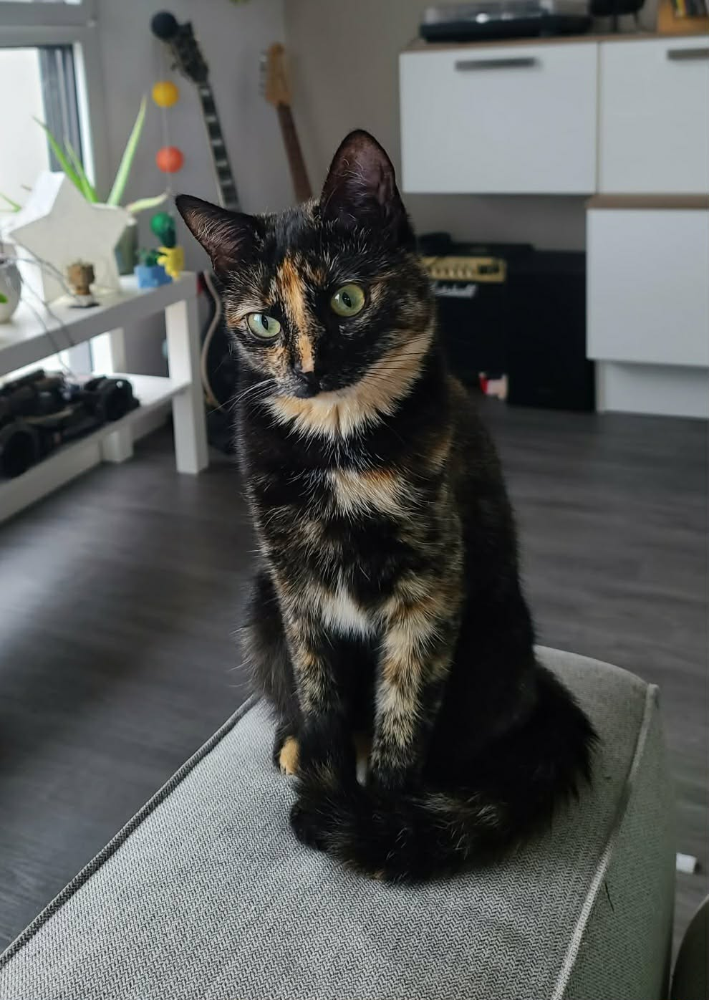

- Elle explore à l'exterieur comme une grande
- Elle adore être avec nous pour n'importe quelle activité, notamment la cuisine où elle prend plaisir à tout sentir, sans jamais sauter sur la nourriture #délicate


| Raisons | Explications | Image |
|---|---|---|
| n°1 | De façon évidente, c'est la plus belle. Une merveilleuse écaille de tortue. Une vraie star. |  |
| n°2 | Elle est intelligente de ouf. Elle apprend à appuyer sur un bouton pour me dire quand elle veut sortir au lieu de miauler de façon primitive telle une animale. | |
| n°3 |
|
|
| n°4 | J'ai déjà dit qu'elle était trop mignonne ? Quand elle joue comme une folle partout dans l'appart, et qu'après elle vient faire des câlins. | |
| n°5 | Elle apprend Java avec moi... en tout cas elle essaye de son mieux ^^ | |